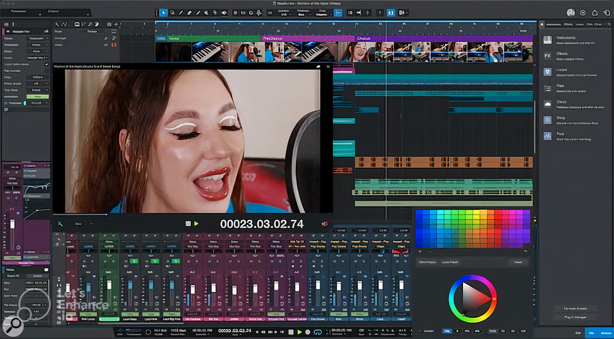

Go Home
Go Back
Mastering, video & lyrics enhancements
PreSonus have today announced the release of Studio One 6.1. This first major update to the latest version of the company’s popular DAW software expands the capabilities of some key features introduced in version 6, as well as enhancing existing tools, updating the dedicated mastering features and providing full compatibility with the Studio One Remote application.
The update introduces a new Score View mode, which allows users to display MIDI note data as standard notation, and also provides deep integration with PreSonus’ Notion software, allowing for the import and export of MusicXML files.
In addition, the Show Page mode has been updated with improved performance and stability, and now includes MIDI editing capabilities. Finally, the new version includes a number of bug fixes and stability improvements, ensuring a smoother and more reliable user experience. Overall, Studio One 6.1 builds on the strengths of the previous version, providing a powerful and intuitive DAW solution for musicians, producers and engineers.
Published 22/3/23
Music Category
Reference: https://www.soundonsound.com/news/presonus-studio-one-61-arrives